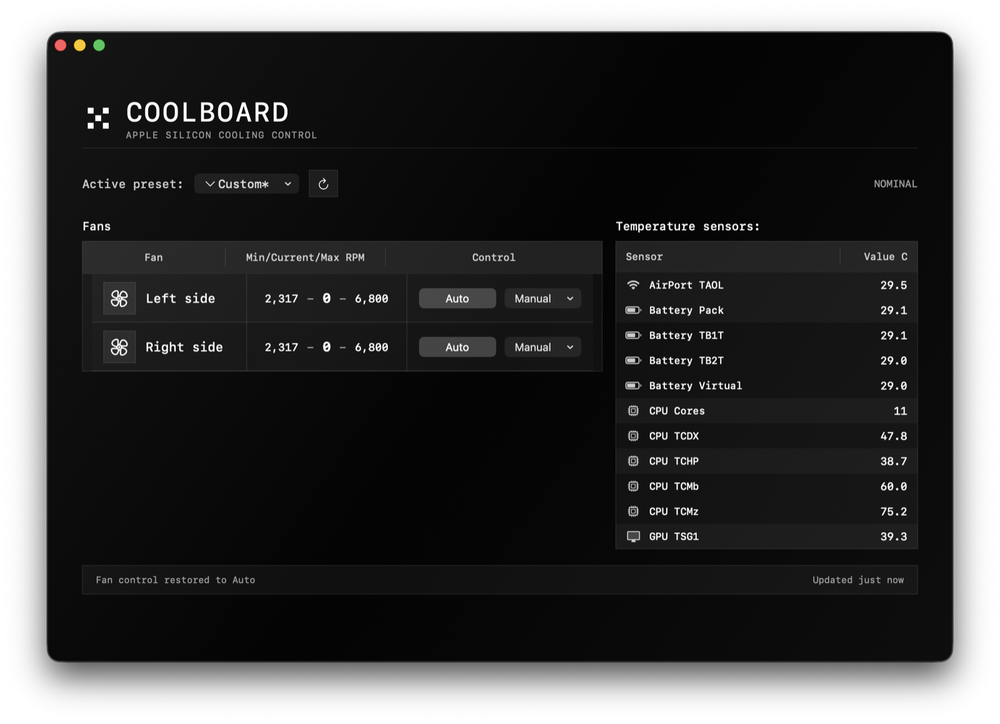

Install
macOS 14+, Apple Silicon, administrator approval for the helper.
Monitor thermal sensors and control detected fans from a quiet macOS panel.

Download contents
The .pkg from GitHub Releases installs CoolBoard into Applications and sets up the local helper path used for fan writes after administrator approval.
macOS 14+, Apple Silicon, administrator approval for the helper.
Auto by default. Manual presets restore on quit, sleep, wake, and errors.
Fanless MacBook Air models run monitoring only and show zero detected fans.
MIT licensed SwiftUI app with documented AppleSMC limitations.